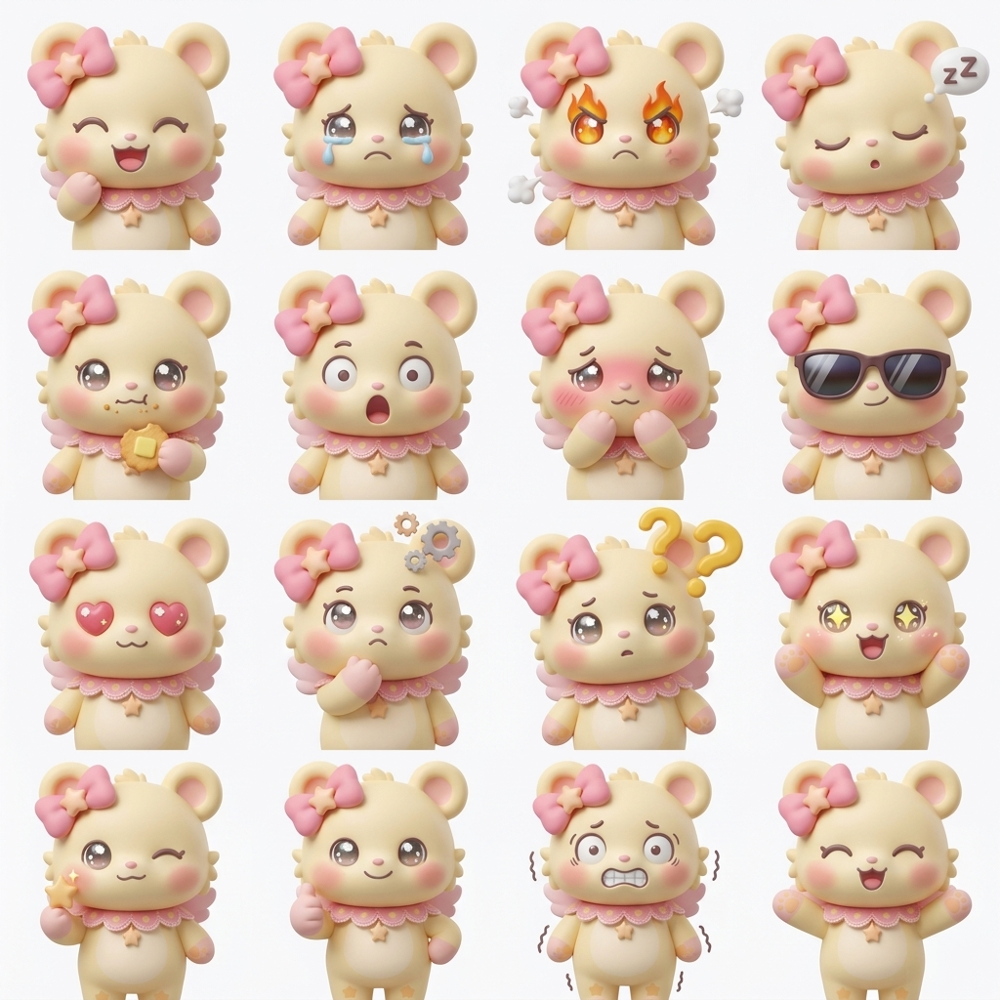
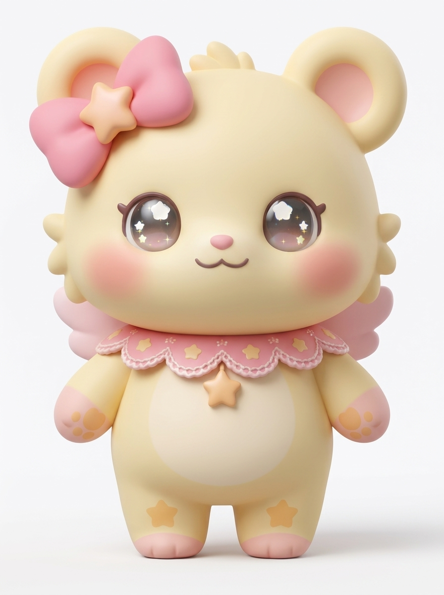

AIGC · IP SYSTEMAI PRODUCT · CREATIVE TECHNOLOGY · 2026
把想法，做成真正
能工作的产品。
你好，我是谢晓璐。一个游走在产品、AI 与设计之间的实践者，
关注如何把复杂技术转译成简单、可感知的用户价值。
 AI PRODUCT · UI/UX
AI PRODUCT · UI/UX
 AGENT · AUTOMATION
AGENT · AUTOMATION
 AIGC · VISUAL STORY
AIGC · VISUAL STORY
 WORKFLOW · DELIVERY
WORKFLOW · DELIVERY
AI AGENT · PRODUCT DESIGN · AIGC · VIBE CODING · AUTOMATION · USER EXPERIENCE · AI AGENT · PRODUCT DESIGN · AIGC · VIBE CODING · AUTOMATION · USER EXPERIENCE ·
SELECTED WORK / 01—04
不是作业展示，
是问题的解法。
从需求定义、交互原型，到 Agent 工作流与视觉表达。每个项目都记录一次把不确定变清晰的过程。
意图识别
自动报告 ✓
从数据到结论，
让 Agent 真正跑起来。
围绕监控分析与报告生成，设计多节点工作流，串联知识检索、数据处理、模型判断与邮件交付。
肌智管家，懂皮肤的
AI 日常顾问。
以 AI 肤质检测为入口，构建报告解读、护肤计划、产品推荐与问答助手的一体化体验。

把一个角色，发展成
可延展的视觉世界。
从三视图、表情系统到空间场景与包装表达，探索生成式 AI 在 IP 设计流程中的一致性控制。
自然语言任务→意图解析→受控执行
USER 请识别红色积木并移动到 A 区
AGENT 任务已拆解，等待安全确认_
STATUS READY TO RUN
AGENT 任务已拆解，等待安全确认_
STATUS READY TO RUN
让机械臂听懂人话，
也让编程更直观。
结合 LLM 自然语言任务与 Blockly 可视化编排，完成教学场景下的交互说明与网页原型。
 Based in Guangzhou · Open to work
Based in Guangzhou · Open to workABOUT / XIAOLU
理性拆解问题，
感性理解人。
华南师范大学信息管理与信息系统专业。我的优势不是只会一种工具，而是能在产品逻辑、AI 能力与视觉表达之间建立连接，把一个模糊想法推进到可演示、可验证的成品。
01产品定义
Research · PRD · UX
Research · PRD · UX
02AI 应用
Agent · RAG · Workflow
Agent · RAG · Workflow
03创意表达
AIGC · Motion · Prototype
AIGC · Motion · Prototype
NEXT CHAPTER
有一个值得实现的想法？
一起聊聊 ↗
正在寻找 AI 产品、产品策划与创意技术方向的机会。
© 2026 XIAOLU PORTFOLIO